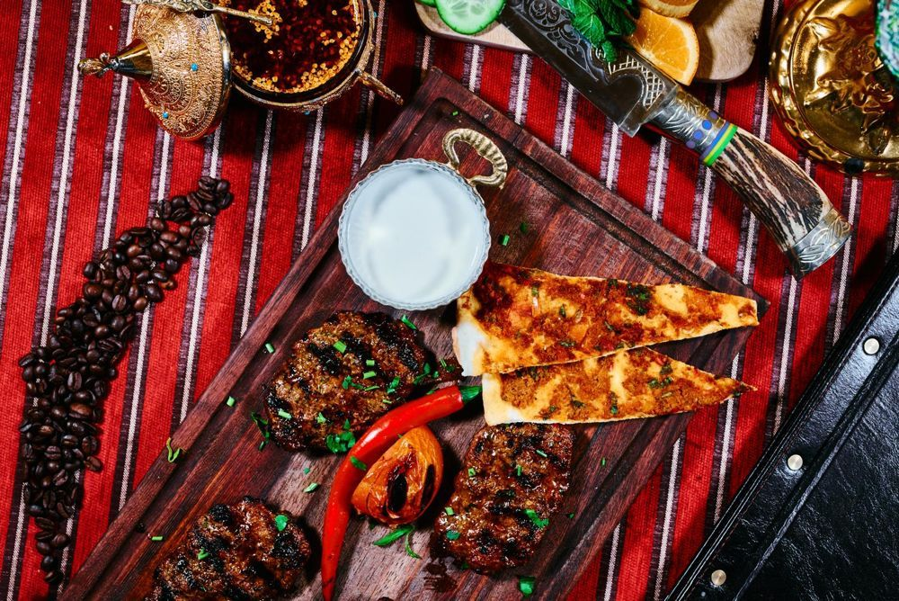
Vom Grill
Peynirli Sarımsaklı Köfte
Mit Schafskäse und Knoblauch gefüllte Hackfleischbällchen mit Reis und Knoblauch-Joghurt-Soße.
Ocakbaşı · Anatolische Küche · Freiburg
Am offenen Holzkohlegrill – dem Ocak – entsteht, wofür Anatolien berühmt ist: echte Glut, reiche Gewürze und Gastfreundschaft von Herzen.
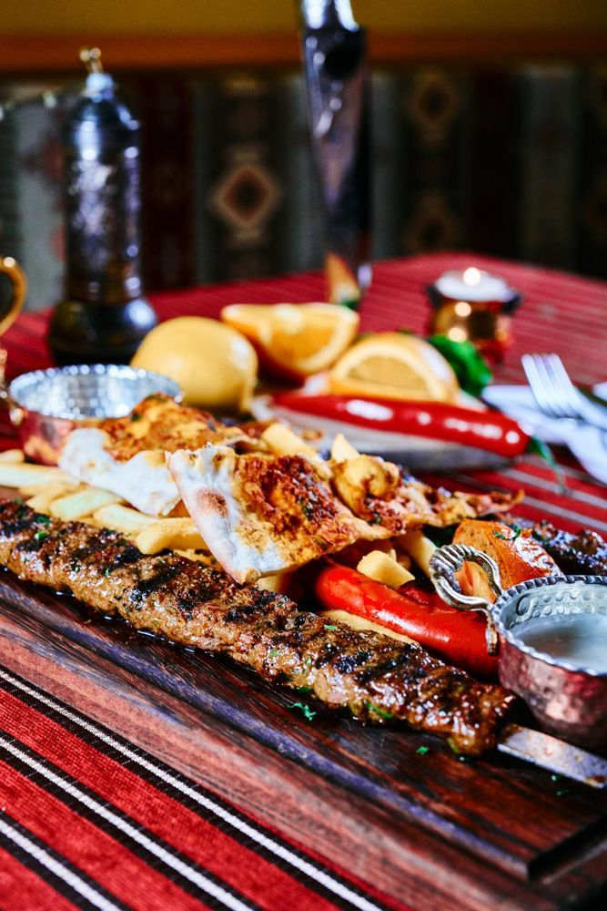
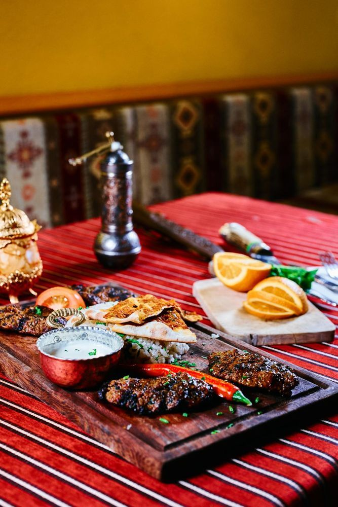
Unser Haus
In Anatolien ist das Ocakbaşı der Ort, an dem man zusammenkommt – rund um den Grill, an dem Köfte, Adana und Lammkoteletts über der Glut garen. Im Divan in der Bertoldstraße holen wir diese Tradition mitten nach Freiburg.
Dazu gehören Meze zum Teilen, Aufläufe aus dem Steinofen, frisch gebackene Pide und Börek, hausgemachter Ayran und zum Schluss ein Künefe mit Pistazien – oder ein Glas Rakı.
Unsere Spezialitäten entdeckenAus Küche & Ocak
Eine kleine Auswahl dessen, was bei uns täglich auf den Tisch kommt – fotografiert in unserem Restaurant.

Mit Schafskäse und Knoblauch gefüllte Hackfleischbällchen mit Reis und Knoblauch-Joghurt-Soße.
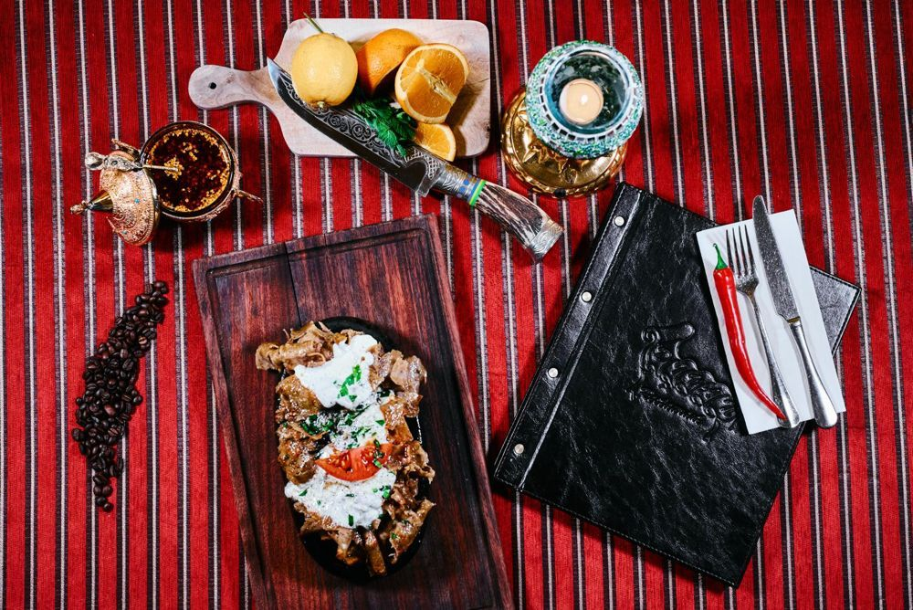
Dönerfleisch auf frischem Sesambrot mit Tomaten, Knoblauch-Joghurt-Soße und Tomatensoße.
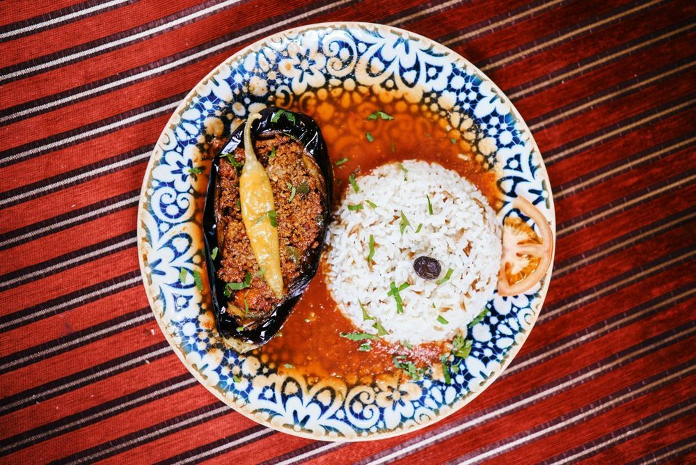
Ofengebackene Auberginen mit würziger Hackfleischfüllung, Tomatensoße und Butterreis.
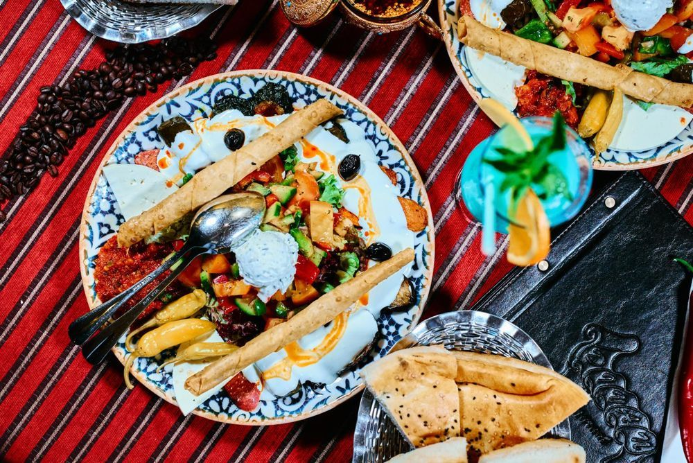
Gemischter Vorspeisenteller zum Teilen – klein oder groß für zwei Personen.
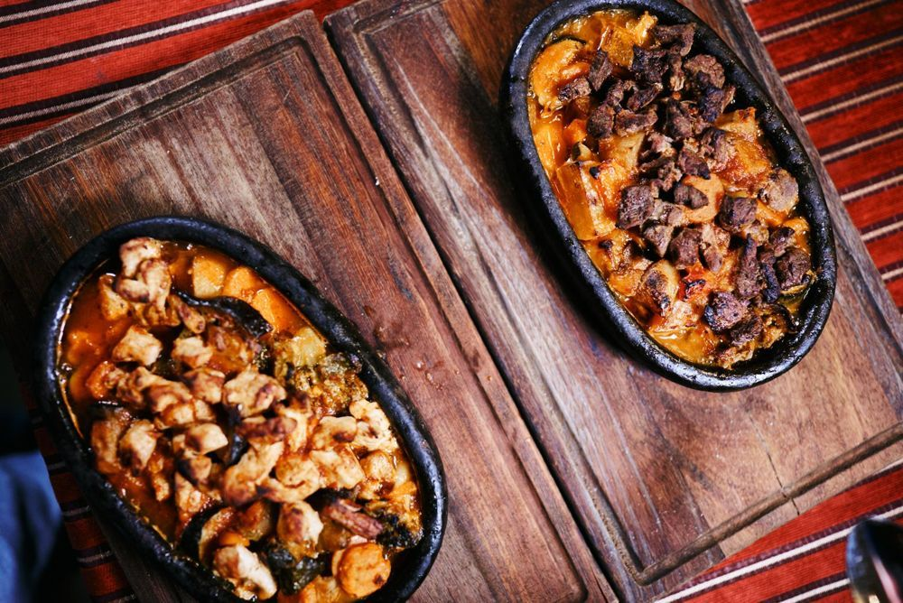
Gemüseauflauf mit Kartoffeln, Auberginen, Zucchini, Blumenkohl, Paprika, Tomaten und Knoblauch.
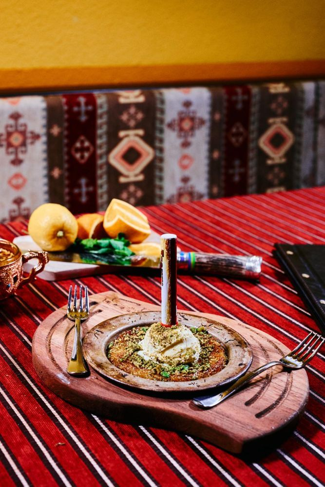
Engelshaar-Teigfäden mit geschmolzenem Käse in Sirup, mit Pistazien verfeinert.
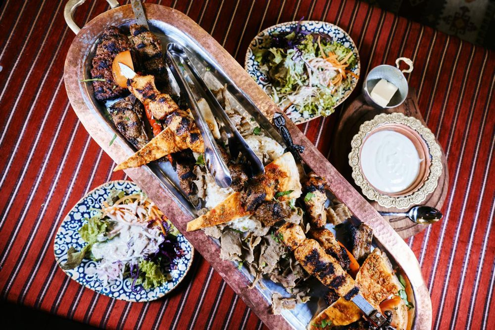
Für zwei – oder für den großen Hunger
Der gemischte Grillteller: Lammspieß, Lammkoteletts, Dönerfleisch, Hackfleischbällchen und Putenspieß, dazu Reis, Knoblauch-Joghurt-Soße und Beilagensalat. Auf Wunsch als große Platte für zwei Personen.
Zur ganzen KarteMittagspause?
Zwanzig Mittagsgerichte – von Saç Döner über Ali Nazik bis Börek – für je 10,90 €. Täglich von 11:30 bis 16:00 Uhr.
Besuchen Sie uns
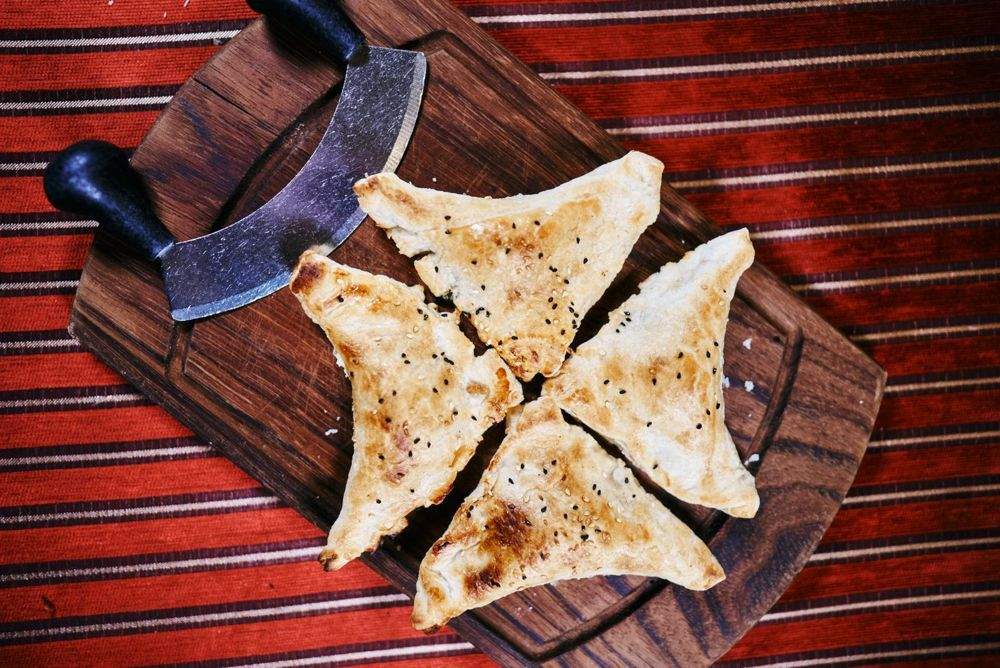
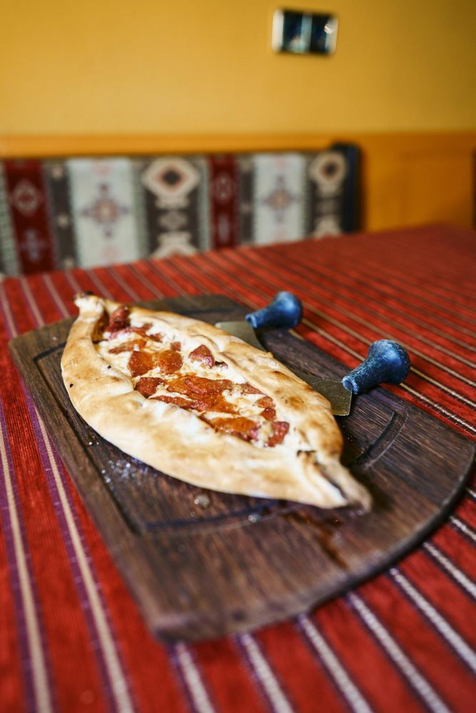